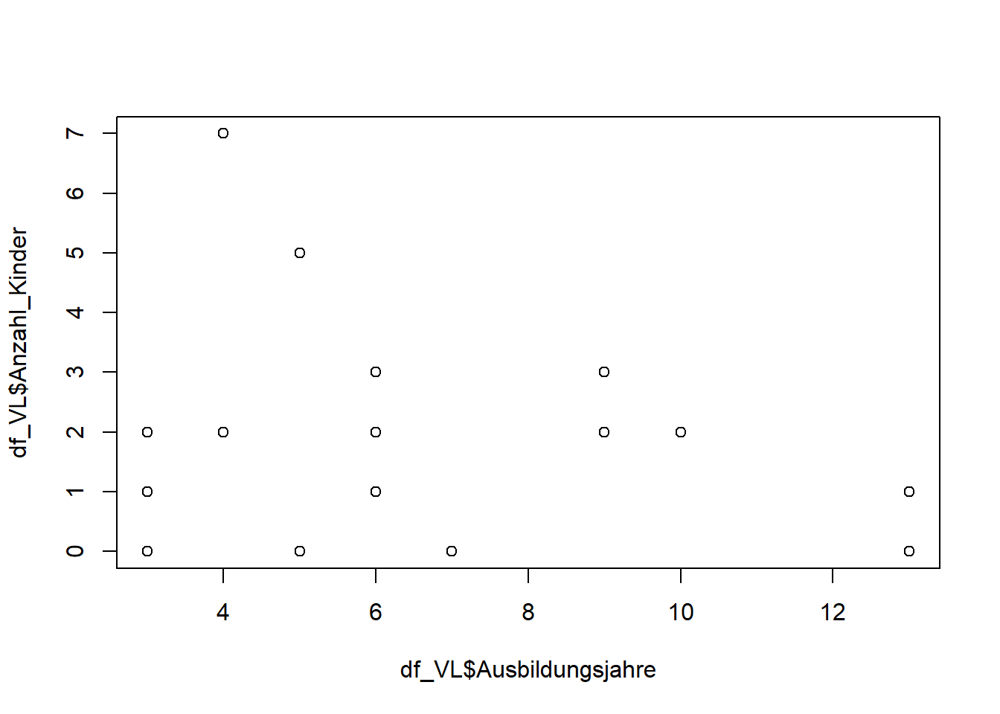

5 Wochenplan 05
… zur Einheit der 05. und 06.Woche.
5.1 Lernziele WP05
In der kommenden Arbeitswoche geht es nun darum, zwei neue Aspekte der Arbeit mit R kennenzulernen und einzuüben: das Zugreifen auf einzelne Elemente und Teile von Datenobjekten (Indizieren und Subsetting) und die Kontrolle von längeren Befehlsabläufen mittels Schleifen (als erste einfache, eigene Funktionen). Für das Kennenlernen und Einüben der beiden Aspekte dient uns das data.frame-Objekt, das im Rahmen des letzten Wochenplans erstellt wurde.
Folgende Lernziele lassen sich festhalten:
- Sie können gezielt auf einzelne Teile eines Datenobjekts zugreifen und kennen verschiedene Wege, das zu tun.
- Sie beginnen in der Arbeit mit R gezielt Funktionen zur Abfrage von Attributen von Objekten zu nutzen.
- Sie verstehen, wie eine for-Schleife funktioniert und können einfache Varianten davon selbst erstellen.
5.2 Hinweise Indizieren & Subsetting
Wie können wir nun mittels Indizieren (Auswählen) und Subsetting (Aufteilen) auf einzelne Elemente eines Objektes zugreifen? Teilweise haben wir diesen Aspekte im Umgang mit R bereits kennengelernt – aber nur implizit! Jetzt geht es darum, dies explizit zu machen. Dabei können wir drei Varianten, mit denen wir auf Daten zugreifen:
Variante: [] Die erste Variante wählt nach den Dimensionen von Objekte die Elemente aus:
vektor1 <- c(1,2,10,5,13,20)
vektor2[4]
datensatz <- data.frame(vektor1, c(1,1,1,1,2,1))
datensatz
datensatz[1,1]
datensatz[6,1]
datensatz[,0]Variante: $ Die zweite Variante funktioniert in einer Logik von benannten “Unterelementen” eines Objektes, wie wir dies etwa als Variablen bei Datensätzen kennen:
datensatz$vektor1Variante: which() Mittels der dritten Variante fragen wir in einem Objekt die Eigenschaften von dessen einzelnen Elementen ab. Dies entspricht einer Vorstellung auf das Zugreifen von Fällen. Und wir tun dies über logische Bedingungen:
which(datensatz$vektor1==20)Sie sehen bereits im letzten Beispiel, dass die Varianten kombinert werden können. Damit können wir uns Beispielweise einen Teildatensatz erstellen:
datensatz[which(datensatz$vektor1==20),]
datensatz[datensatz$vektor1==20,] #als einfachere Schreibweise5.3 Aufgaben WP05
- Wenden Sie die Funktionen
dim(),names(),str(),class()undtypeof()auf Ihren Datensatz an (d.h. das data.frame-Objekt an, welches Sie im Rahmen des letzten Wochenplans erstellt haben). Was sagen Ihnen diese Funktionen jeweils? Welcher Output dieser Funktionen leuchtet Ihnen ein, welcher weniger?
Ein erster Datensatz von Valentina Meyer:
#data.frame-Objekt von letzter Woche:
#Vorbereitung
Age <- c(runif(100, min = 13, max = 18))
Alter <- as.character(Age)
#Dataframe erstellen
df_VM <- data.frame(ID=c(1:100),
Alter,
Gewicht= c(rep(15,4), rep(16,4), rep(17,8),rep(18,12),
rep(19,14), rep(20,16), rep(21,18),
rep(22, 12), rep(23, 8), rep(24,4)),
Sport= c(seq(10,50,2), seq(50,100,3), seq(100,150,4),
seq(150,200,3), seq(200,240,2), rep(120,5),
rep(60,6)),
Internetnutzung= c(seq(10,50,4), seq(50,100,3),
seq(100,150,2), seq(150,200,3),
seq(200,240,4), rep(100,6),
rep(180,8), rep(60,4)))Über die Funktion view() oder indem wir im Environment-Fenster auf das Objekt des Datensatzes klicken können wir das erstelte Objekt auch betrachten.
Was sagen uns nun die einzelnen Funktionen der Aufgabenstellung aus?
dim(df_VM)## [1] 100 5…die Dimensionen Ihres Datensatzes: die Zeilen- und Spaltenzahl, was der Anzahl Fällen und Variablen im Datensatz entspricht. Auf diese Dimensionen greifen Sie dann auch mittels den [] zu.
names(df_VM)## [1] "ID" "Alter" "Gewicht" "Sport"
## [5] "Internetnutzung"…die Namen Ihrer Vektoren aus, also die Variablennamen im Datensatz. Diese können wir dann auch verändern:
names(df_VM)[4] <- "Sportminuten"Hingegen werden die Namen der Reihen (die Fallnummern) nicht ausgegeben. Diese können wir auch ändern falls wir wollten über rownames(). Die Änderung sehen wir dann im Datenviewer.
rownames(df_VM)[2] <- "Fall-Zwei"str(df_VM)## 'data.frame': 100 obs. of 5 variables:
## $ ID : int 1 2 3 4 5 6 7 8 9 10 ...
## $ Alter : chr "14.3590072724037" "13.6548999028746" "16.4260366531089" "13.5695021688007" ...
## $ Gewicht : num 15 15 15 15 16 16 16 16 17 17 ...
## $ Sportminuten : num 10 12 14 16 18 20 22 24 26 28 ...
## $ Internetnutzung: num 10 14 18 22 26 30 34 38 42 46 ...…die Struktur Ihres Datensatzes aus, das heisst die Unterobjekte bzw. Variablen im Datensatz, auf die Sie mittels dem Dollarzeichen zugreifen können. Diese Funktion bietet bieten eine schnelle Übersicht, etwa um Umkodierungen in einem Datensatz zu erkennen oder allgemein auszuweisen, was in einem Objekt enthalten ist.
class(df_VM)## [1] "data.frame"…die Klasse Ihres Objektes, das heisst die von Ihnen zugewiesene Eigenschaft des Objektes. Für einen data.frame-Objekt bedeutet dies folgendes (aus der Hileseite der Funktion): “A data frame is a structure in R that holds data and is similar to the datasets found in standard statistical packages (for example, SAS, SPSS, and Stata). The columns are variables and the rows are observations. You can have variables of different types (for example, numeric, character) in the same data frame. Data frames are the main structures you’ll use to store datasets.”
typeof(df_VM)## [1] "list"…und der Typ Ihres Objektes, das heisst die R-interne Art und Weise, die Daten Ihres Objektes abzuspeichern (hier zeigt sich also die Datenart, und nicht die Objektart/-typ). Listen ist die Speicherweise für verschiedenen Datenformen und kann verschiedene Objekte (bzw. verschiedene Klassen von Objekten) enthalten.
Eine weitere nützliche Funktion (für data.frame Objekte und andere) ist summary():
summary(df_VM)## ID Alter Gewicht Sportminuten
## Min. : 1.00 Length:100 Min. :15.00 Min. : 10.00
## 1st Qu.: 25.75 Class :character 1st Qu.:18.00 1st Qu.: 59.75
## Median : 50.50 Mode :character Median :20.00 Median :120.00
## Mean : 50.50 Mean :19.84 Mean :120.38
## 3rd Qu.: 75.25 3rd Qu.:21.00 3rd Qu.:186.75
## Max. :100.00 Max. :24.00 Max. :240.00
## Internetnutzung
## Min. : 10.00
## 1st Qu.: 79.25
## Median :123.00
## Mean :124.96
## 3rd Qu.:180.00
## Max. :240.00Die Funktion gibt uns für jede Variable eine Übersicht. Sie berechnet bei den metrischen Variablen die Mittelwerte sowie Streuungsmasse und bei Character-Daten die Klasse. Weiter würden auch noch NAs angezeigt, falls diese vorhanden wären. Die Funktion, so könnten wir zusammenfassen, berechnet also immer wieder dieselben Dinge für alle Variablen eines Datensatzes.
Eine solche Repetition und Kontrolle von Befehlsabläufen können wir auch selber herstellen über sogenannte Schleifen. Grundsätzlich sind diese for-Schleifen so aufgebaut:
for (Variation in Sequenz){
Funktion;
}Im ersten Teil (vor den {}-Klammern) befindet sich der sogenannte Funktionskopf, in dem formale Elemente definiert sind, also mit welcher Variation einer Sequenz etwas ablaufen soll. Anschliessend folgt in den {}-Klammern der Funktionsrumpf, der bestimmt, was genau in der Schleife passieren soll.
Hier ein einfaches Beispiel:
for (i in 1:2) {
print(i)
}…oder bezogen auf einen Datensatz:
for (i in 1:2) {
print(df_VM[,i])
}
#bzw.
for (i in 1:2) {
print(df_VM[i,])
}Dies können wir auch erweitern, in dem wir nicht eine bestimmte Zahl definieren in den formalen Elementen, sondern die Anzahl Spalten oder Anzahl Zeilen abfragen – und uns so eigentlich den ganzen Datensatz ausgeben lassen:
for (i in 1:ncol(df_VM)) {
print(df_VM[,i])
}
#bzw.
for (i in 1:nrow(df_VM)) {
print(df_VM[i,])
}Im folgenden Code-Chunk wird nun eine solche for-Schleife definiert, welche die vorherige Funktion für die metrischen Variable im Datensatz immitiert. Zuerst wird dies nur für mean() umgesetzt. Anschliessend werden noch min() und max() ergänzen im Funktionsrumpf.
for (i in 3:ncol(df_VM)) {
print(mean(df_VM[,i]))
}
summary(df_VM)
#Ergänzung von min und max:
for (i in 3:ncol(df_VM)) {
print(names(df_VM[i]));
print(c("Min", min(df_VM[,i])));
print(c("Mean", mean(df_VM[,i])));
print(c("Max", max(df_VM[,i])));
}
#Verwendung von cat() anstelle von Print -- ein Vorschlag von Josias Bruderer
for (i in 3:ncol(df_VM)) {
cat(c("\n", names(df_VM[i])));
cat(c(" Min", min(df_VM[,i])));
cat(c(" Mean", mean(df_VM[,i])));
cat(c(" Max", max(df_VM[,i])));
}2. Wählen Sie aus Ihrem Datensatz die Fälle 20 bis 30 sowie die zweite und dritte Variable aus (ohne einen Teildatensatz zu erstellen). Tun Sie dies auf zwei verschiedene Varianten!
Variante 1 mittels [] und dem Zugreifen auf die Dimensionen des Datensatzes:
df_VM[c(20:30), c(2,3)]
#oder einfach:
df_VM[20:30, 2:3]
#oder
df_VM[20:30, c("Alter", "Gewicht")]Variante 2 mittels $ und dem Zugreifen auf die Dimensionen der Vektoren bzw. Variablen:
cbind(df_VM$Alter[20:30], df_VM$Gewicht[20:30])Wie könnten wir vorgehen, wenn wir genau diese Fälle und Variablen nicht wollten? Wir nutzen eine “negative” c()-Funktion:
df_VM[-c(20:30), -c(2,3)]3. Suchen Sie Fälle in Ihrem Datensatz unter der Verwendung von mindestens zwei Variablen. Diese Fälle sollen “spezielle” oder “interessante” Beispiele repräsentieren – begründen Sie Ihre Wahl! Falls Sie keine solche Fälle in Ihrem Datensatz finden können Sie vorhandene Ausprägungen auch anpassen.
Ein Datensatz und Beispiel von Fabio Keller:
gender <- as.integer(runif(100, 0, 2))
income <- rnorm(100, 10000, 4000)
education <- as.integer(rnorm(100, 2, 0.8))
age <- runif(100, 18, 90)
home <- sample(c(rep(c("countryside", "suburb", "city"), each = 33), "city"))
df_FK <- data.frame(gender, income, education, age, home)
#Ein spezieller Fall?
which(df_FK$income > 15000 & df_FK$education == 0)## [1] 7#oder einfach:
df_FK[df_FK$income > 15000 & df_FK$education == 0,]## gender income education age home
## 7 0 20738.86 0 89.1498 suburbEin Datensatz und Beispiel von Vanessa Leutener:
Einkommen <- c(seq(from = 2000, to = 12000, length.out = 100))
Krankheitstage <- round(rnorm(runif(100, min = 3, max = 40),
mean = 6.5, sd =3))
Ausbildungsjahre <- (rep(c(3, 6, 9, 3, 13, 4, 6, 7, 10, 5),
each = 10))
Anzahl_Kinder <- rep(c(1, 0, 1, 2, 3, 2, 2, 0, 0 ,
1, 7, 2, 3, 1, 0, 0, 2, 2,5, 0),
each = 5)
Geschlecht <- sample(rep(c("weiblich", "männlich",
"divers", "männlich", "weiblich"),
each = 20))
df_VL <- data.frame(Einkommen, Krankheitstage,
Ausbildungsjahre, Anzahl_Kinder,
Geschlecht)
# Eine erste Feststellung:
plot(df_VL$Ausbildungsjahre, df_VL$Anzahl_Kinder)
# Wie könnten wir jetzt spezielle Fälle finden?
which(df_VL$Ausbildungsjahre>mean(df_VL$Ausbildungsjahre)
&
df_VL$Anzahl_Kinder>mean(df_VL$Anzahl_Kinder))## [1] 21 22 23 24 25 26 27 28 29 30 81 82 83 84 85 86 87 88 89 90# Hier weisen wir einfach noch dem 50 Fall (mit hoher Bildung) eine hohe Anzahl Kinder zu:
df_VL$Anzahl_Kinder[50] <- 84. Definieren Sie eine logische Bedingung die Ihnen erlaubt, Ihr Dataframe anhand der Character-Variable in zwei Gruppen zu teilen. Dies ist eine erste Variante um Teildatensätz zu erstellen (TD1 & TD2). Teilen Sie dann als zweite Variante Ihren Datensatz anhand einer anderen logischen Bedingung in zwei andere Gruppen (TD3 & TD4). Nutzen Sie hierfür wenn möglich zwei numerische Variablen.
Ein Datensatz und Beispiel von Katrin Oesch:
Wohnort <-c(rep(1:6, times=5),3,4,2,2,6,5,1,
rep(1,times=10),5,3,4,1,1,3,
rep(seq(from=1, to=6, by=2),times=7),
rep(3, times=8),
rep(seq(from=1, to=6, by=3),times=9))
Lebenszufriedenheit <-c(rep(seq(from=1,to=10, by=2),times=9),
rep(4:6, times=12),10,9,4,4,8,7,
rep(5,times=7),8,3,4,
seq(from=2, to=9, by=3))
Alter_KO <-c(rep(33:44),seq(from=28,to=66,by=4),
54,62,42,85,66,41,91,23,
rep(43,times=7),87,44,43,65,31,
rep(31:56),43,23,31,65,43,25,26,36,
rep(seq(from=54,to=71,by=5),times=2),
rep(28:35, each=2))
Arbeitsstatus <-c(rep(1:8, times=5),4,2,2,6,5,7,
rep(1,times=10),rep(2,times=4),5,3,4,1,3,
rep(seq(from=1, to=8, by=2),times=),
rep(3, times=8),5,6,
rep(seq(from=1, to=8, by=3),times=7))
Abstimmungsberechtigung <- c(rep("Ja",times=25),
"Nein","Nein","Ja","Nein","Nein","Ja","Nein",
"Nein","Ja","Nein","Nein", "Ja",
rep("Nein",times=15),
"Ja","Nein","Nein","Ja","Nein","Nein",
"Ja","Nein","Nein","Ja","Ja",
rep("Ja",times=33),"Nein","Ja","Nein","Ja")
df_KO <-data.frame(Wohnort, Lebenszufriedenheit,
Alter_KO, Arbeitsstatus, Abstimmungsberechtigung)
#und die vier Teildatensätz:
berechtigt <- which(df_KO$Abstimmungsberechtigung=="Ja")
TD1_KO <- df_KO[berechtigt,]
nichtberechtigt <- which(df_KO$Abstimmungsberechtigung=="Nein")
TD2_KO <- df_KO[nichtberechtigt,]
staedtisch_alt <- which(df_KO$Wohnort<=3 & df_KO$Alter>=40)
TD3_KO <- df_KO[staedtisch_alt,]
#Wie könnten wir den Vektor 'staedtisch_alt' nutzen?
TD4_KO <- df_KO[-c(staedtisch_alt),]
#Wir nehmen also einfach "alle anderen".5. Berechnen Sie jeweils die Standardabweichungen einer Variable bei den vier Teildatensätze, die Sie in Aufgabe 3 erstellt haben. Was wären (kurze) sozialwissenschaftliche Interpretationen Ihrer Ergebnisse?
Ein Datensatz und Beispiel von Josias Bruderer:
#Datensatz
df_JB <- data.frame(alter = round(runif(100, 18, 64)),
geschlecht = sample(rep(c(seq(1,3),2,3), 20)),
tvdauer = sample(round(rnorm(100, 3, 1), 0)),
happiness = sample(c(sample(1:10, 80, replace = T), rep(NA, 20))),
prog = sample(rep(c("Sandmännchen","Tagesschau", "Akte-X","Simpsons",NA), 20)))
TD1_JB <- df_JB[which(!is.na(df_JB$prog)),] # Angabe zu Programm vorhanden
TD2_JB <- df_JB[which(is.na(df_JB$prog)),] # Angabe zu Programm nicht vorhanden
#Berechnung der Standardabweichung für zwei Teildatensätze:
for(t in list(TD1_JB, TD2_JB)){
print(mean(t$tvdauer, na.rm = T));
print(sd(t$tvdauer, na.rm = T))
}## [1] 2.95
## [1] 1.112643
## [1] 3
## [1] 1.169795Hier sehen wir ein komplexeres Beispiel einer Schleife, dass die Möglichkeit von Listen nutzt. Schleifen können daher beliebig komplex werden – und sie sind ein erster Schritt hin zum Schreiben von eigenen Funktionen. Wir nehmen nochmals die Schleife von oben und wenden diese Auf den Datensatz von Katrin Oesch an:
for (i in 1:(ncol(df_KO)-1)) {
print(mean(df_KO[,i]))
}Was wäre wenn wir diesen Prozess nun auf beliebige Datensätze anwenden möchten, wie etwa die vier Teildatensätz aus Aufgabe 4? Hierfür können wir eine eigene Funktion programmieren:
NameEigeneFunktion <- function(argumente){
anweisungen(mit argumenten);
weitere anweisung(mit argumenten)
}Im sogenannten Funktionskopf innerhalb der runden Klammern auf function folgend werden die formalen Argumente benannt und durch Kommas voneinander getrennt. Damit wird festgelegt, welche Eingabeinformationen die Funktion benötigt. […] Alle im Funktionskopf enthaltenen Argumente müssen im Funktionsrumpf, der in geschweiften Klammern {} folgt, als Objekte definiert werden. Dabei können Argumente selbst andernorts definierte Funktionen sein […]. Der Funktionsrumpf besteht also aus einer Reihe von Befehlen sowie gegebenenfalls durch # gekennzeichnete Kommentare (Manderscheid 2017, 240f).
Hier nun als ausformulierte Funktion:
mean_df <- function(df, nr) {
df <- df[,-c(nr)];
for (i in 1:ncol(df)) {
print(mean(df[,i]))
}
}
#für Teildatensatz 1
mean_df(TD1_KO, 5)
#für Teildatensatz 4
mean_df(TD4_KO, 5)6. Berechnen Sie für eine Variable und bei einer der vier Möglichkeiten aus Aufgabe 3 den Mittelwert, nun allerdings in einem Schritt (das heisst ohne zuerst einen Teildatensatz zu erstellen).
Ein Datensatz und Beispiel von Julien Lattmann:
#Datensatz
Alter_LJ <- round(runif(100, 18, 30), 0)
Dauer_Ausbildung <- round(runif(100, 9, 20), 0)
Einstiegsgehalt <- round(rnorm(100, 6000, 1800), 0)
Zufriedenheit <- round(runif(100, 1, 10), 0)
Branche <- rep(c("Finanz-/Versicherungswesen", "Information/Kommunikation",
"Gesundheits-/Sozialwesen", "Erziehung/Unterricht",
"Dienstleistungsbereich"), 20)
df_LJ <- data.frame(Alter_LJ, Dauer_Ausbildung, Einstiegsgehalt,
Zufriedenheit, Branche)
#Variante 1
mean(df_LJ[df_LJ$Einstiegsgehalt >= 6000 &
df_LJ$Dauer_Ausbildung >= 14,"Einstiegsgehalt"])## [1] 7640.615#Variante 2
mean(df_LJ$Einstiegsgehalt[df_LJ$Einstiegsgehalt >= 6000
& df_LJ$Dauer_Ausbildung >= 14])## [1] 7640.615